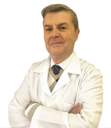
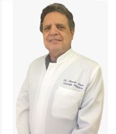

CORPO CLÍNICO
PROFISSIONAIS
________dr. sergio
antonio panizzon
________
Graduação em Medicina pela UFRGS em 1977
Especialização em Cirurgia Plástica na Clinica Planas - Barcelona/Espanha
Felow na New York University

dr. renato
viera
________
Graduação em Medicina pela UFRGS
Especialização na Clinica Planas - Barcelona/Espanha
Fellow Caniesburn - Escócia
Felow no Hospital Monte Sinai - New York
